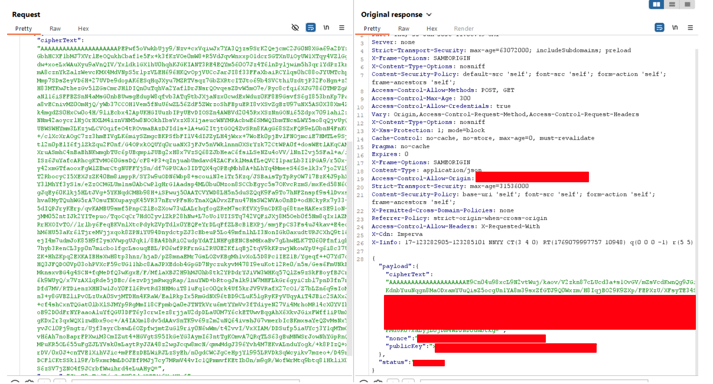
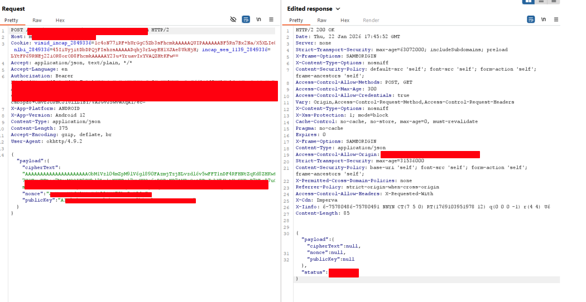
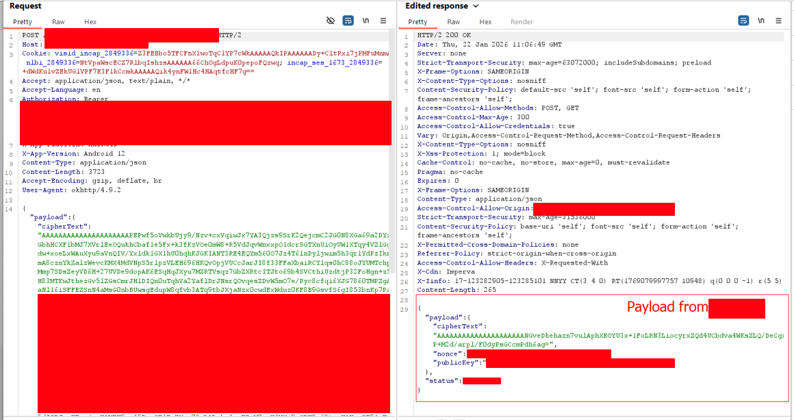

This is one of the interesting bugs that I happened to find during an assessment for one of my clients. It was really weird at first glance when I tried to tinker with the HTTPS request inside Burp. At the time, I was reading a book on some psychological stuff and trying to practise one or two things, like taking a step back and not taking something at face value, or taking a look at nature and then applying it to find bugs.
I am writing this because the process of finding this was pretty amusing, and some of it may apply to everyday life.
Introduction
Early in the assessment, there was a walkthrough as usual. I saw that the scope of it was the implementation of a third-party program on the mobile app as a defence when a scenario like a user being blacklisted from the [redacted], or unable to log in, etc.
Hmm.. pretty interesting. The scope is not that large and it goes general. From login until certain modules where the fraud system would block the user based on the business module itself. So.. what do we do now?
Building custom test cases
As I thought about this scope, the best possible way was to find the primary objective. How does the backend verify the request and response? How is the third-party fraud system implemented in this system?
For this app, it was my second time doing the assessment and I am not really that familiar with it, as this mobile app is fully obfuscated with cryptography. Every parameter input has its own hash or algorithm.
In a human mind.. this would be an uncomfortable zone. What to test? Does the OWASP top 10 really matter at this point? No source code either to check what variable each parameter is. So, for me to build a test case, I need to satisfy some requirements which I determined are important:
- What is actually needed in the HTTPS request
- What parameter can be removed? If removed, what happens?
- Can I add a new parameter or not?
- Most important, how can I trigger an error? For me, this is the essential one. Like SQL injection or other types of bugs, the most important thing is to know how the backend behaves after sending whatever regex, unicode, or whatever input from the user.
- Do I need to change the request or the response?
- What is the threat model here? Bypass the third party?
- Compare the normal flow and the flow that has been blocked by the fraud system. Which component is needed to bypass the mechanism?
There are other requirements which were in my mind when I was trying to tinker with the request, but I just kept the most important ones here.
Finding the weak spot
As the app encrypts all the parameters itself, I was trying to find some response or some error that was not encrypted. I found an API endpoint where the response was null and had a custom status which indicated maybe success or failure. It was a custom code for sure. From building the test cases, I found that I needed to send a response to the fraud system so that it would return the subsequent API which was blocked.
The main idea was to create a hypothesis:
- Make an edited trusted response that is sent from the server, which the client (app) accepts, and then the subsequent API will accept (fraud bypass)
- Take a response from any API which will make the subsequent API be called (fraud bypass)
- Guess if the microservices API share the same parameter or intrinsic behaviour which makes the client trust the response from the server (fraud bypass)
Exploit
Some of the bypasses of the fraud system:

Orignal Burp Response

Edited Burp Response

Edited Burp Response For 2nd test case
There are other test cases which inherently give a bypass to the module in scope, but they are not really that interesting to talk about. I think there were about 12 to 14 test cases and maybe 4 to 5 root issues; some test cases may share the same root issue.
Funny Story
I was recording a lot of videos and having a meeting every time this fraud system got bypassed after the report was sent, as there were many root issues. Or maybe the fix caused a regression? I don't know which one.
I also went to their PC and had a face-to-face discussion with the SWE and the mobile developer. There was also an SA near the table. I don't really want to talk about the fix because it is very specific on how they wanted to put something in to know the origin of the request to make it unique.